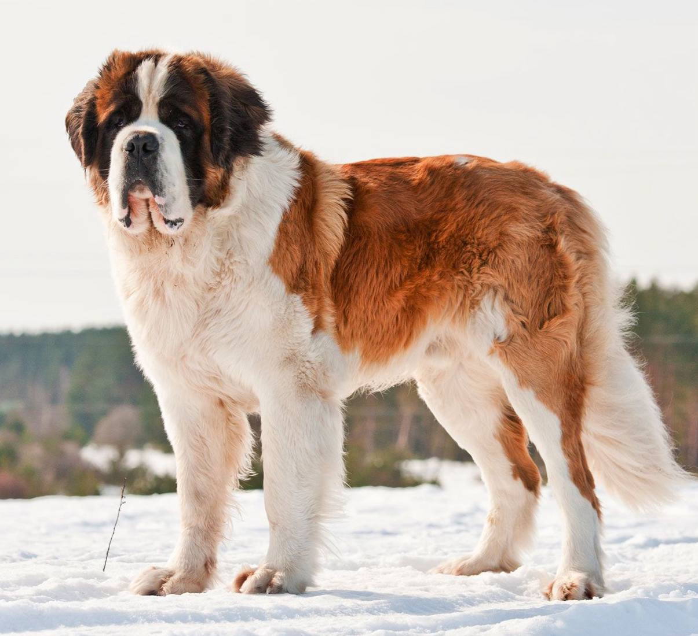

Сенбернар

Происхождение: Швейцария
Размер: Очень крупные (рост: 70–90 см, вес: 65–120 кг)
Характер: Спокойные, добродушные, терпеливые
Особенности: Известны как спасатели в горах. Обильное слюноотделение, шерсть требует ухода. Медлительные, но очень сильные
Здоровье: Дисплазия суставов, сердечные болезни